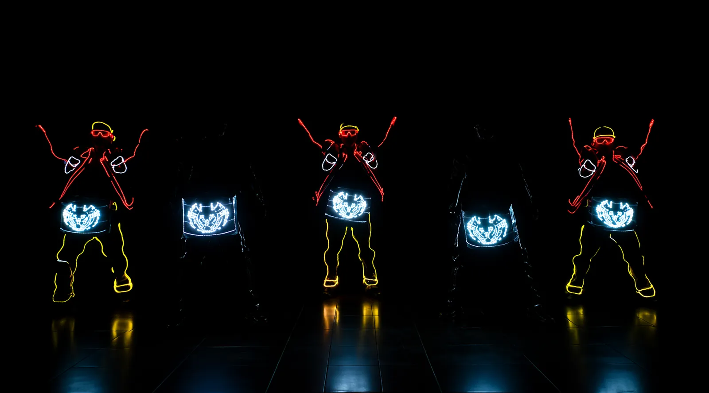
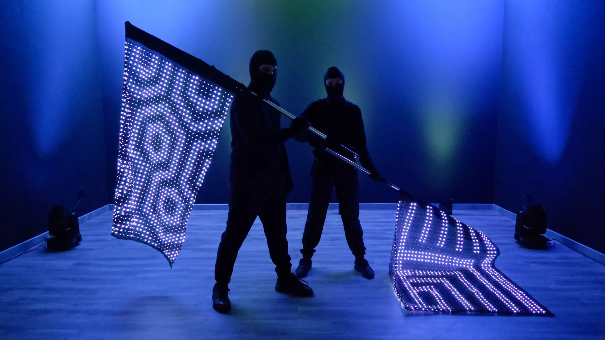

FORMATO 0130 MINUTOS
7 artistas
Una formación compacta con percusión, viento y movimiento visual.
- Banderas LED
- 02
- Viento
- 01
- Bombos LED
- 02
- Tarola
- 01
- Repique
- 01


LIGHTMAN × BUILDING CONNECTIONS
Percusión en vivo, banderas digitales y vestuario LED.
Dos formatos para una entrada que se hace sentir.
01 / DOS FORMAS DE HACERLO VIBRAR
Ambas opciones combinan músicos en vivo y dos banderas LED. El formato de diez artistas suma un viento, un bombo y una tarola para ampliar la presencia sonora y visual.
Una formación compacta con percusión, viento y movimiento visual.
Un elenco más amplio para reforzar la energía de la presentación.
02 / IMAGINA TU MARCA EN ESCENA
Explora una propuesta de marca sobre las banderas y los bombos LED. Cambia de elenco, color y movimiento para comparar el resultado.
Recreación 3D basada en el video de LIGHTMAN. Vestuario negro, máscaras frontales, tiras LED, capas, instrumentos y banderas de 1,50 × 1,00 m. Arrastra para girar; usa la rueda o dos dedos para acercarte. La coreografía y las proporciones son aproximadas.
Carga una imagen en el panel y ajusta su tamaño en banderas y pantallas. La personalización y su alcance se confirman antes de producir el contenido.

REFERENCIA REAL · BANDERAS LIGHTMAN03 / LA EXPERIENCIA REAL
Las imágenes muestran nuestros equipos y vestuario. El video de TikTok permite apreciar el movimiento, la percusión y la presencia del conjunto durante una presentación.
Ver referencia de batucada ↗BUILDING CONNECTIONS / 21.11.2026
Presentación de 30 minutos. Local y horario pendientes de coordinación.